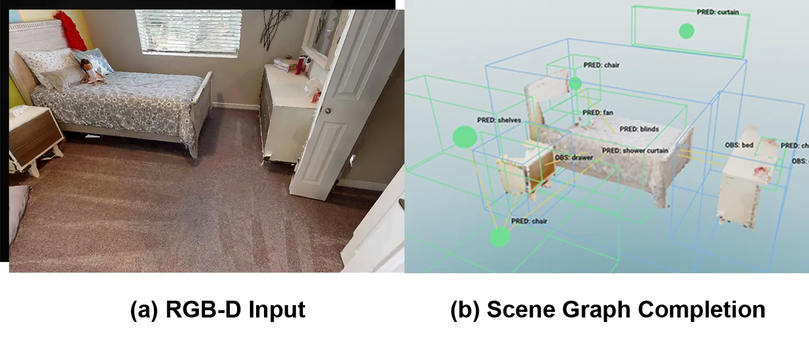
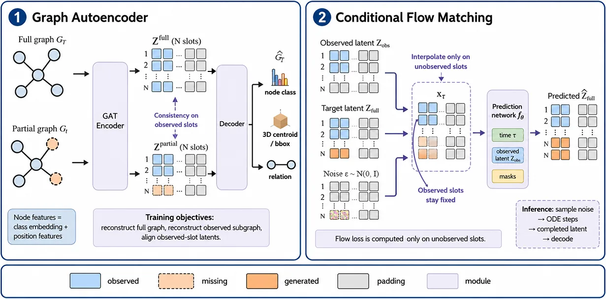
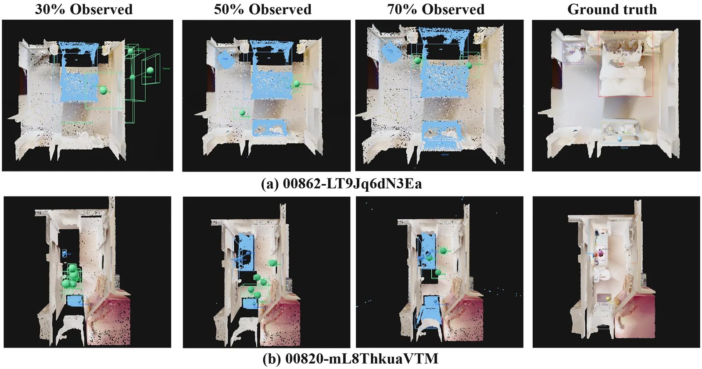

ICCAS 2026 · Accepted
Latent Flow Matching for 3D Scene Graph Completion (LatentSGC)
A graph autoencoder with conditional flow matching completes unobserved objects and relations, reaching node F1 0.432 and edge F1 0.255 (+0.187 and +0.166 over deterministic baselines).
- Venue
- ICCAS 2026
- Status
- Accepted
- Role
- First author
- When
- 2026
- Where
- Robotics & AI Lab, Kwangwoon University
Abstract
Robots exploring indoor environments often receive only partial observations of the surrounding scene, leaving unobserved objects and spatial relations unknown. We propose LatentSGC, a latent flow matching framework for uncertainty-aware 3D scene graph completion from partial robot observations.
LatentSGC first uses a Graph Autoencoder to encode scene graphs into per-node latent slots, and then applies Conditional Flow Matching to complete the unobserved slots by integrating a learned ODE conditioned on the observed subgraph. Since each inference run starts from independent Gaussian noise, multiple samples produce diverse yet plausible completions, providing a probabilistic belief over hidden room structures rather than a single deterministic prediction.
On a benchmark derived from HM3D-Semantics scenes at 30%, 50%, and 70% observation ratios, LatentSGC achieves Node F1 of 0.432 and Edge F1 of 0.255, outperforming deterministic baselines by 0.187 in Node F1 and 0.166 in Edge F1. We further demonstrate the integration of LatentSGC with an RGB-D perception pipeline in Habitat Simulator on rooms unseen during training, where it produces plausible completions of unobserved room structures.


